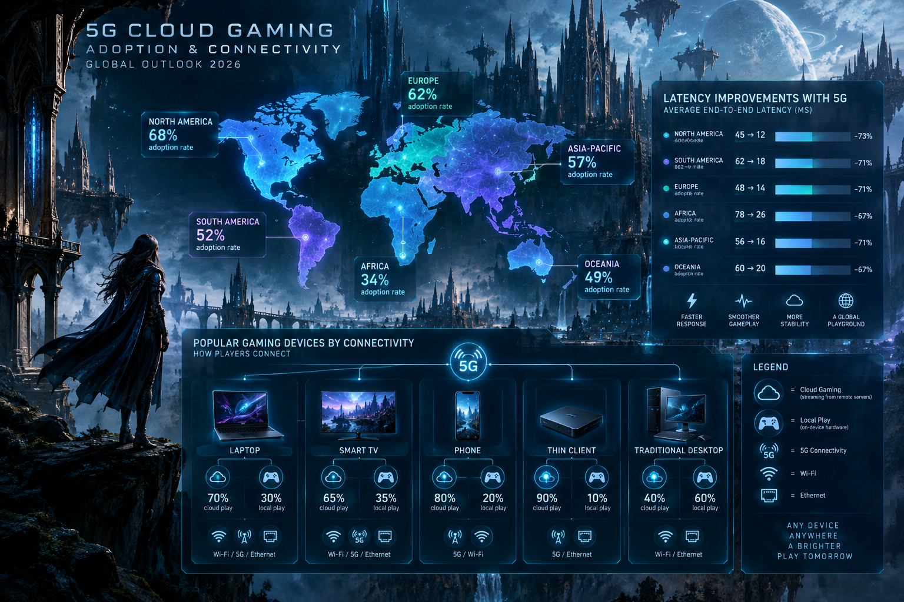
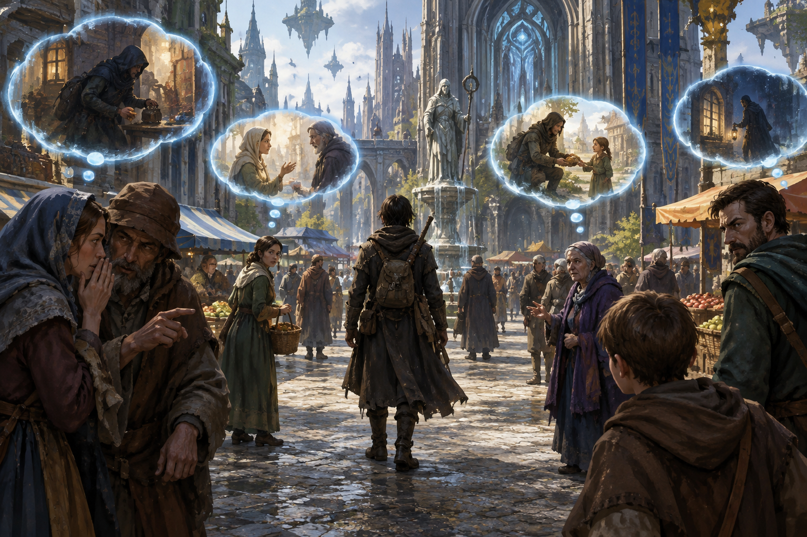

The Stream Reimagined: How Game Streaming Platforms Rewired Community and Culture in 2026
Twitch, TikTok Live, and a new ecosystem of streamed-play are transforming what it means to gather, create, and compete in game culture—remaking both audiences and communities.
READ THE STORY ↗
5G Unleashed: How Ultra-Fast Networks Are Disrupting PC Gaming in 2026
With cloud gaming surging beyond 500 million users, 5G is fundamentally transforming who can play, where they play, and even what 'owning' a gaming PC means in 2026.
READ THE STORY ↗
Tool or Threat? Inside the Real Impact of AI-Assisted Development on MMORPGs in 2026
As artificial intelligence reshapes workflows and creativity in MMORPG design, the genre faces new winds of change—and resistance. What happens when the next adventure is built not just by teams of artists and coders, but by algorithms and assistants?
READ THE STORY ↗
A Living World Under Threat: How Consequence-Driven Crime and Justice Systems Are Revolutionizing RPGs
In 2026, RPGs are raising the bar for immersive world design with evolving crime and justice systems. Here’s how groundbreaking AI and memory mechanics are creating truly reactive societies—and changing how players experience morality, freedom, and consequence.
READ THE STORY ↗Pixel Perfect Partners: The Anime Aesthetic Changing Console Co-Op with 'Orbitals' in 2026
Shapefarm’s 'Orbitals' fuses hand-drawn anime visuals with innovative cooperative mechanics, carving a new niche for console co-op games in 2026.
READ THE STORY ↗